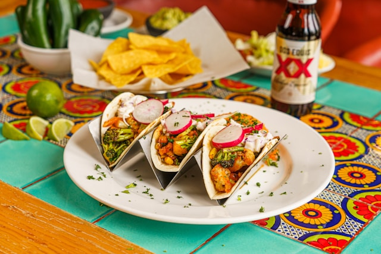

Home
Chimichurri Steak Tacos

Description
These delicious chimichurri steak tacos have an Argentinian flair. Seared flank steak slices on tortillas are topped with chimichurri sauce, pickled onion, cotija, and cilantro.
Ingredients
- 1 pound flank steak
- 1 teaspoon of salt or more as needed
- 2 tablespoons oil, divided, or as needed
- 4 white corn tortillas
- 1/2 cup prepared chimichurri sauce, homemade or purchased
- 1/4 cup pickled red onions
- 1/2 cup shredded cotija cheese
- Cilantro, for garnish
Steps
- Gather all ingredients.
- Sprinkle salt over steak to cover both sides. Wrap tightly in plastic wrap and refrigerate for 1 hour or up to 1 day.
- Heat a skillet over medium heat and add 1 tablespoon oil. Fry tortillas, 1 at a time, on each side until puffy and golden brown, about 1 minute. Set aside on a plate and cover with paper towels.
- Sear steak in the same skillet, adding oil as needed; turn over frequently until browned, about 8 minutes per side. For medium-rare, steaks will be firm and reddish-pink and juicy in the center. An instant-read thermometer inserted into the center should read 130 degrees F (54 degrees C) for medium rare.
- Remove to a cutting board to rest. Once rested, slice steak against the grain.
- Serve in tortilla and top with onions, chimichurri, and shredded cheese. Top with cilantro.